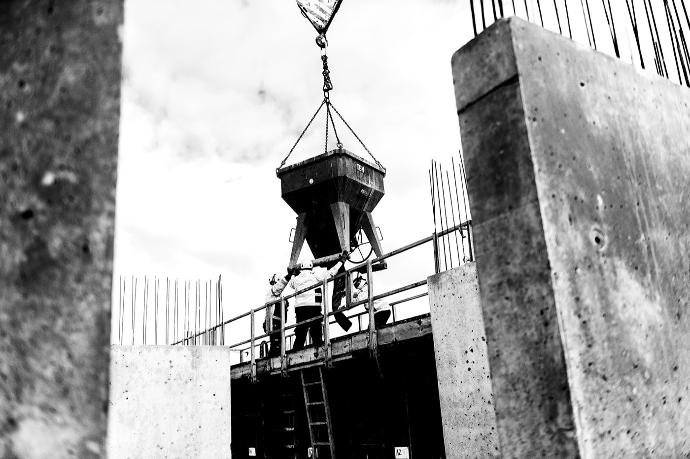
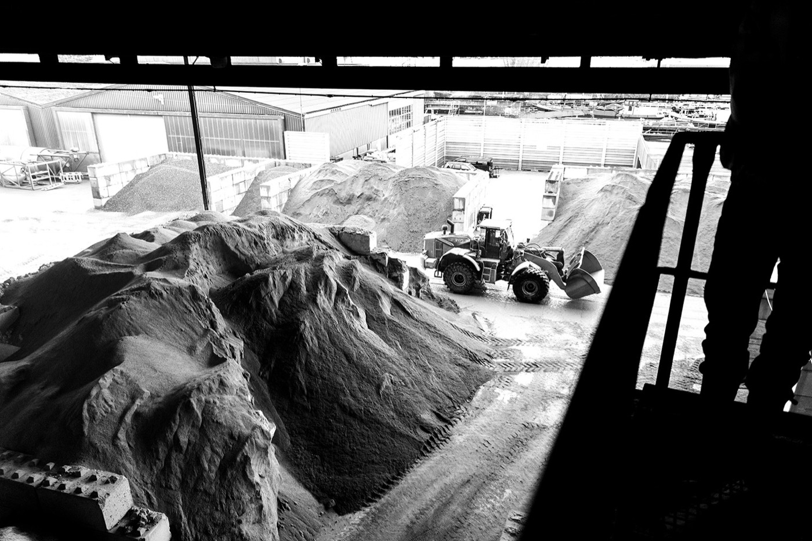

Liberated Concrete™ · a local Amsterdam business
Circular concrete. Your price in 60 seconds.
Certified ready-mix that meets the same standards as traditional concrete, with no compromises. Made from recycled concrete at our Zaandam plant, at market price. From 1 m³, delivered across Amsterdam and the region.
Home and small jobs
Shed base, patio, driveway, foundations?
See your exact price and book a delivery slot online.
From per m³ incl. BTW ( excl. BTW).
Get an instant priceTrade and commercial
Site pours, piling, groundworks?
Priority slots, invoice terms and a direct line to planning.
One-off larger pour? Quote within .
Trade enquiry- NEN-EN 206 / NEN 8005 certified
- Same standards and strength as traditional concrete
- 63–80% lower CO₂ than reference concrete
- A planner confirms before you're charged

Proper concrete. No compromises.
Liberated Concrete meets exactly the same standards as traditional concrete. It's suitable for every part of construction, from high-rise, tunnels and bridges to foundations, driveways and shed bases.
- Just as strongThe same strength classes and certifications as traditional concrete. It performs on a par with it, and sometimes better.
- Built to lastCertified to the same durability standards as traditional concrete, the standards that bridges, tunnels and high-rise are built to.
- Certified and checkedEvery mix is certified, has an EN 15804 environmental product declaration (EPD) and is checked by our technical team, who can help you choose.
- LocalAn Amsterdam business, making concrete at our own plant in Zaandam.
Your price. Right now.
Choose your concrete, see the cost and book your slot.
How it works

Choose your mix
By project or by mix code, with your price shown instantly.
We confirm, then charge
A planner calls to check the details. You pay the confirmed amount only.
Delivered fresh
Mixed in Zaandam and delivered in your morning or afternoon slot.
A bigger job? Get a trade price.
Email us your requirements and we'll come back with a price within . Regular customers get priority slots, , a named planning contact and the paperwork your engineer needs.
Frequently asked questions
Is Liberated Concrete as good as normal concrete?
Yes. It meets the same standards as traditional concrete, holds the same certifications and performs on a par with it, sometimes better. It can be used wherever traditional concrete is used, from house foundations to high-rise, tunnels and bridges.
Why choose it over normal concrete?
Same quality, same market price, and 63–80% less CO₂ than reference concrete. It's made from old concrete, so no new sand, gravel or cement has to be dug up or burned.
Will it last as long as normal concrete?
Yes. It's certified to the same strength and durability standards as traditional concrete, the same standards used for bridges, tunnels and high-rise.
Who are SL Materials?
An Amsterdam concrete business, set up by the Rutte Group. We make Liberated Concrete at our own plant in Zaandam. More about us.
What's the minimum order?
1 m³ online. A truck carries up to 12 m³, so loads under 8 m³ pay a part-load charge, which is shown in your price before you order. For less than 1 m³, bagged concrete from a builders' merchant is usually better value.
How much should I order?
Use the dimensions calculator in the order tool. It adds 10% to cover waste and uneven ground. You can order up to 48 m³ online; for more, ask for a quote.
Which mix do I need?
Choose your project in the order tool and it recommends a mix. Still not sure? Call or email our sales team at and we'll help.
How long can the truck wait?
Every delivery includes up to 30 minutes to unload. After that, waiting time is charged at €60.50 incl. BTW (€50 excl. BTW) for every 15 minutes. If you're barrowing the concrete, make sure you have enough people and wheelbarrows ready.
Can you pump the concrete?
Yes. Choose "Pump, SL arranges it" and we'll book one; pump hire is charged separately and a planner will be in touch with the price. Pumping needs a fluid mix (S3 or S4).
Where do you deliver?
Within about km of our Zaandam plant, including Amsterdam, Haarlem and Purmerend.
How do I pay?
Online, by iDEAL, debit or credit card, Apple Pay or Google Pay. With a card or wallet we put a temporary hold on the amount and only charge what the planner confirms; the rest is released within 24 hours of delivery. With iDEAL you pay when you order and get any difference refunded. Trade customers can apply for invoice terms.